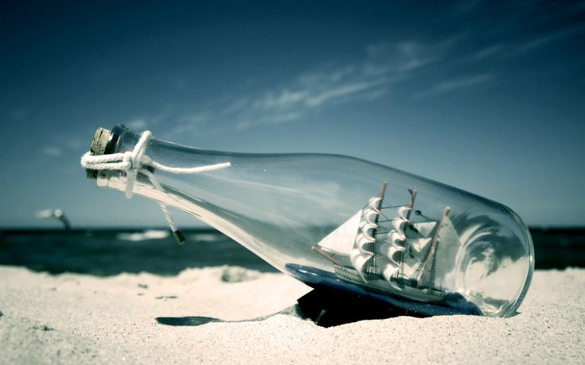

-
对于名誉和财富，你希望它什么时候到来呢？
一谈到名誉和财富，此刻你是否突然会闪现这样的念头呢？抱着美人勾着美酒开着跑车要出席某知名导演的现场嘉宾？？？对，这是幻想，说实话，我也有过，但现实呢，沧桑啊！现实是需要我们看清自己的，这些欲望下面的事物都是需要凡人台下若干年的修炼才可能结出善果的，一蹴而就除非你太高估买彩票中500万的概率。生活需要打拼才有意义，至少我是这样认为的，之前看过一位北大才女刘媛媛的演讲至今仍是激情四射：我们出身寒门，爬到大城市去混，不是要我们一直去适应社会，我们要适应社会之后积极去改变社会，这种人生观是可敬的，以后走出来的路回头看才会是斗士的一生，要相信自己，相信梦想，相信坚持，相信孤忍 . . . . . .

当然我们大多数人都会希望财富名誉来的越早越好，这样可以更早实现自己的梦想，建立更多的丰功伟绩，让更多的人成为你的粉丝，看起来光彩夺目的niubility！当然可以安家乐业这是再好不过了，重要的是走出若干困境之后我们绝大多数会更理智更成熟拥有更好的自己去遇到和爱更好的人。我也不知道那些励志明星是怎么看待挫折的，好多是自己无法选择的硬着头皮走出来的经典，找感觉找到最合适的自己去学习更多领域的知识，该来的总会到来，相信“天道酬勤”，相信自己！
这个故事是关于“有志者、事竟成，破釜沉舟，百二秦关终属楚;”的故事。
关于“苦心人、天不负，卧薪尝胆，三千越甲可吞吴。”的故事。
-
我所了解的“九型人格”是啥样的呢？
1号性格：完美型；2号性格：助人型；3号性格：成就型；4号性格：自我型；5号性格：理智型；6号性格：疑惑型/忠诚型；7号性格：活跃型；8号性格：领袖型；9号性格：和平型。
对于这本经典之作，记得当时笔者首先读的是电子版的，后来才是厚皮书。对人挖掘的很透彻全面，不管现在您现在符合哪种类型，都不是那么绝对的按这种路径发展；可能也有人会兼具好几种色彩，暂且把它作为简单外剖析自己的参考书，类似MBTI性格测试的在线模型。对于团队建设和授权管理在初期筛选时会有参考作用，最重要的是根据实际生存经验更好的选择战场来发挥自己的核心竞争力！
-
大学时期恋爱为什么十有八九会分手呢？
如果我不曾为你我的未来努力，那我拿什么证明我爱着你？
如果你实在忍受不了孤独，可以试着牵起一个人的手，但愿你们是合适的一对，或者彼此在试着了解不同性别动物的需求，走到最后与否还要看彼此的缘分了。至少我相信缘分，我相信你。
人们都说，20岁是一个女生最美好的年纪，也是一个20多岁的男生最一无所有的年纪。女生的梦想十分琐碎，但是很是实际，男生的梦想很动听，但是更为飘渺一些。
这个世界上没有哪个女孩会因为你游戏里的橙色匕首或者凤凰坐骑嫁给你，就算你打dota天梯一百万分都没用。说实话身边人整天撸的什么乱七八糟的游戏我连名字都叫不上来，这些还是看微信文章里面的就摘在笔记本里面了。要知道，没有实际付出的爱，并不能称之为爱，充其量不过可以被叫做喜欢罢了，或者说为了那几分钟的荷尔蒙刺激一下爽爽罢了。
其实被抛弃的男生，女朋友离开他们的很大一部分原因，是在这些人身上看不到未来。她不是受不了你穷，而是受不了你相信自己要穷一辈子。
爱不是说说而已，爱也不是听起来好听就可以。如果说恋爱是两个人的事情，那么婚姻就是两个家庭的事情。“如果我不曾为你我的未来努力，那我拿什么证明我爱着你？”
致男生：不管是为了自己还是为了喜欢的女生，趁年轻，多拼搏奋斗；男人，只有拥有了自己的事业，资本，才有资格谈女人。如果你有幸超越20岁还拿你爹的钱养自己or谈恋爱，个人觉得是可耻的。自己读书学东西，积累经验，人脉，阅历，才是真正的财富！
致女生：可能有的女生会想，我是女生，只要以后嫁个好男人或者有钱的富家子弟，那我就满足了！千万不能这么想，女生最值钱的是青春，如果自己有能力，那么就趁这机会多读点书，多走走，也多赚点钱。 记住一句话：不要完全依赖男人！
但，凡事都有例外，关键是：事在人为。
-
图书馆5楼偶读韩寒书《像少年啦飞驰》
啊，小鸟，你的心，为什么跳得那么快，平均每分钟达到了600多次，是你的恋人在枝头，还是猎人在你脚下.
啊，青蛙，你为什么这么悲伤，你的眼里含有泪光，原来是你的爹妈，被人类放到了桌上。
呀，青蛙，请你不要悲伤，祖国有很多大学生在发愤图强，都在争做祖国的栋梁，保护你们健康成长
说实话我去图书馆打算找曾国藩的书，偶然发现韩寒，从小知道他是一个“叛逆”的英雄，闲暇时翻了本书读出了他的人格和向往，也许和他有几点相似就读了下去，他的文学的天赋可够我我望其项背的了，虽选择了走不同于芸芸众生的路线但这样的怪才毕竟是少，从他作品中也能看出来一点“怀念青春，祭奠童年”的意蕴，正如鲁迅的话“走自己的路，让别人去说吧！”延续近日，一直是文学路上的制高点，可敬可感！
-
熬夜看优酷《老友记》想想人活着还能再舒服点？
冯唐和柳青的奋斗回顾片，都是可谓在某些领域叱咤风云的人物，身上带有耀人的多种标签，出身富族依旧如此努力，也许冯唐的68个小时连续工作劲曾让我望其项背，我们总有一段时期处于最忙的状态，总想着做完活我一定要出去走走，看看胡同和老街，睡个大觉已是相当幸福。人可以掩饰自己的龌龊和肮脏，但很难掩盖住理想；如同冯唐在《北京北京》的后记当中写到那样，年轻的人总是带着肚子里的书，脑子里的野心，心坎儿里的姑娘或情郎，软硬件齐备，装满旅行箱，去寻找自己安身立命的地方，无论找得到找不到，只要出发了就会遍体鳞伤，所以成功，迷茫，都是出发的副产品，因为你细腻，因为你幸福，所以注定在负重中成长，生活本没那么复杂，种豆子和相思或许都会得瓜，你敢试世界就敢回答。
与人交往学会点水抽身，大多数人偏爱涟漪，而不是风波，妄想搅动出什么，只会让自己狼狈。找到最让自己舒服的人交往，也会让自己更新鲜一些. . . . . .
-
一个人不要老是一个人，但要习惯一个人
是？真有这种感觉，经常故意远离一群人，即使有些好朋友也在队列当中，内心也想积极参与，身不由己的是还有更重要的一批批任务等着处理，只好随口说一声“下一次吧”，就这样慢慢与他们疏远，但是在他们需要时我会立即安排好日程计划赶过去看看；相信自己慢慢成熟，开始真正懂得用“大人”的视角看待人际，工作，娱乐 . . . . . .总有一天身边懂你的人也都会明白因为之后或之前他们也会遇到这个状态，人的成长总是一个过程，像马拉松一样要考虑 多方面的因素，最终都会到达终点，只是加速度和速度变化区间不同罢了！我不建议人总是孤来孤往，身边最好有在各个领域和方式上相互互补的朋友群。总是一个人的生活虽是独立的行为但不是最佳的取值，成熟之后你会更加爱自己，了解并时常思考自己，习惯和自己对话及时发现优劣并快速成长，当然这些行为你梦想挑战自己去独立完成无疑会受到高强度的压力，当然包括你的精神和肉体层面；所以聪明人做自己就是留更多的时间给自己，在不紧急情况下体验分享与朋友在一起的有限时光。
最怕的，是一直一个人。看着万家灯火，一个人；望着街头巷尾，一个人；走过喧嚣热闹，一个人；临近节假日，一个人。感谢的是，二十一年来我爱着的人，我们彼此的祝福着，我们都喜欢孤独，都喜欢这种成长方式，而且我们都交到了许多不错的铁朋友；如果 时光可以重来，我们还愿意这样，三分的不合群，留给自己的时光来填补内心的浮躁。
-
是不是当今大学生主流群体生怕自己被贴上“不合群”的标签呢？
不是让你啥都“特立独行”，最起码有自己的正价值取向和核心竞争力否则真让别人说成“不懂世俗的不合群”了；物以类聚，人以群分；人总是找到与自己气味相投的人去做有兴趣的事。看着身边的许多人，都喜欢聚众去做一些事情，兴许是让别人看起来更牛逼一些吧，好像那种“你看我朋友多，人缘多好啊！”这是普遍人的想法，太在乎别人的眼光，要是整天没有所谓的“小伙伴”“闺蜜”腻在一起，真像少了魂似的，这就是一种没有成熟虚荣心的表现，工作之后会有说不完的孤寂苦楚之类的事，当然都需要这些人用时光去填补，当初留给自己的时间太少了以至于思考自己都成了技术性问题。所以，要趁早，磨练自己与孤独作伴，要么多读书要么出去走；都说成长在于历练，人只有经过孤独的考验方能在任何时期的低谷爆发无穷的反弹力。
太在乎别人比没有朋友圈还要累，我们生而孤独。爱自己就是留更多的时间给自己，有些路只能一个人走，独自去承受，不如去享受，换换心态即可 . . . . . .
在大学，当你发现你和身边人状态差不多时，不妨给自己几巴掌，劳逸结合的学习社交，把自己炼就成多领域的综合性人才过程是痛苦的，不过结果会让你满意的。
-
备注声明
工作原因，文章板块均移步到微信公众平台的原创媒体，感兴趣者可以添加微信号：PhotoArtLife(或识别右侧二维码添加编辑WeChat)
二维码
微博私信
回到顶部